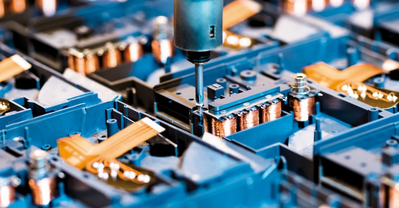

Interesses
“A única habilidade competitiva de longo prazo é a capacidade de aprender.” - Seymour Papert

A minha formação original é em Engenharia Mecânica. Depois estudei Controlo de Sistemas, uma área interdisciplinar focada em perceber, estimar e controlar uma grande variedade de sistemas, em particular sistemas mecatrónicos. Finalmente, na minha tese explorei mergir Controlo com Processos Gaussianos, uma forma de Machine Learning.
Para além de uma formação forte em matemática e física, bem como experiência de programação, abaixo apresento uma lista de tópicos nos quais de alguma forma trabalhei nos últimos anos:
- Teoria de Controlo
- Controlo PID
- MPC (Model Predictive Control)
- Controlo Robusto
- Identificação de Sistemas
- Robótica
- Mecatrónica
- Machine Learning
- Processos Gaussianos
- Neural Networks
- Sistemas Fuzzy
Programar foi sempre um interesse pessoal. Aqui estão as linguas com que trabalhei:
- MATLAB/Simulink/Stateflow
- Python
- R
- C
- SQL/SQLite